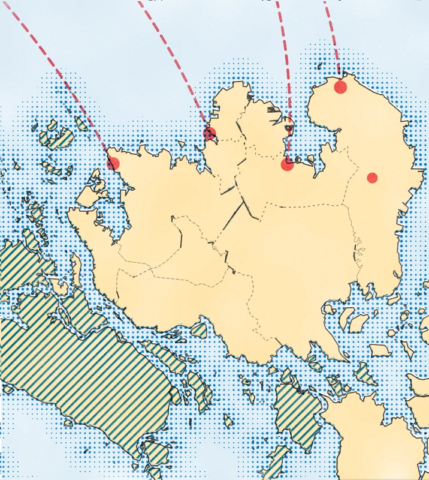

Hari Ini di Batam
Hujan ringan di Bulang dan Belakang Padang. Gelombang rendah.
Gelombang 0,5 meter, angin 4 km/jam dari barat laut. Feri terakhir ke Singapura pukul 20.30 WIB.

Hujan ringan
Bulang · pukul 09.40 WIB
Pulau Batam
Rempang
Batam Centre
Harbour Bay
Sekupang
NongsapuraBulang · pukul 09.40 WIB
HujanRinganBulang dan Belakang Padang
Gelombang0,5 mRendah, berlaku sampai pukul 10.00 WIB
Angin4 km/jamDari barat laut
Feri terakhir ke Singapura20.30Batam Centre dan Harbour Bay
Peringatan gelombang: status belum dapat dimuat.
Buka Cuaca dan Laut →Peta
Cari tempat di Batam

MakanCerita dan sejarahTransportasiIbadahBelanjaAlam dan ruang publik
Ketuk Tempat untuk memilih jenis tempat. © OpenStreetMap · Protomaps
Loket
Tujuh loket informasi kota
 01Cuaca dan LautRadar hujan, tinggi gelombang, dan kamera lalu lintas.
01Cuaca dan LautRadar hujan, tinggi gelombang, dan kamera lalu lintas. 02MakanTempat makan pilihan, dari kopitiam sampai gonggong.
02MakanTempat makan pilihan, dari kopitiam sampai gonggong. 03Tukang LanggananJasa yang direkomendasikan warga.
03Tukang LanggananJasa yang direkomendasikan warga. 05Cerita dan BudayaSejarah, kampung tua, tokoh, dan kamus.
05Cerita dan BudayaSejarah, kampung tua, tokoh, dan kamus. 06Informasi WargaDirektori, nomor darurat, dan panduan.
06Informasi WargaDirektori, nomor darurat, dan panduan. 07Ruang MainKartu pos dan kalkulator belanja.
07Ruang MainKartu pos dan kalkulator belanja.Ada yang keliru?Kirim koreksi →

Cerita dan Budaya · Kampung Tua
Nongsa dan mandat 18 Desember 1829
Nama Nongsa berasal dari Nong Isa, nama timang Raja Isa bin Raja Ali. Tanggal mandatnya, 18 Desember 1829, kini diperingati sebagai Hari Jadi Kota Batam.
Baca ceritanya →